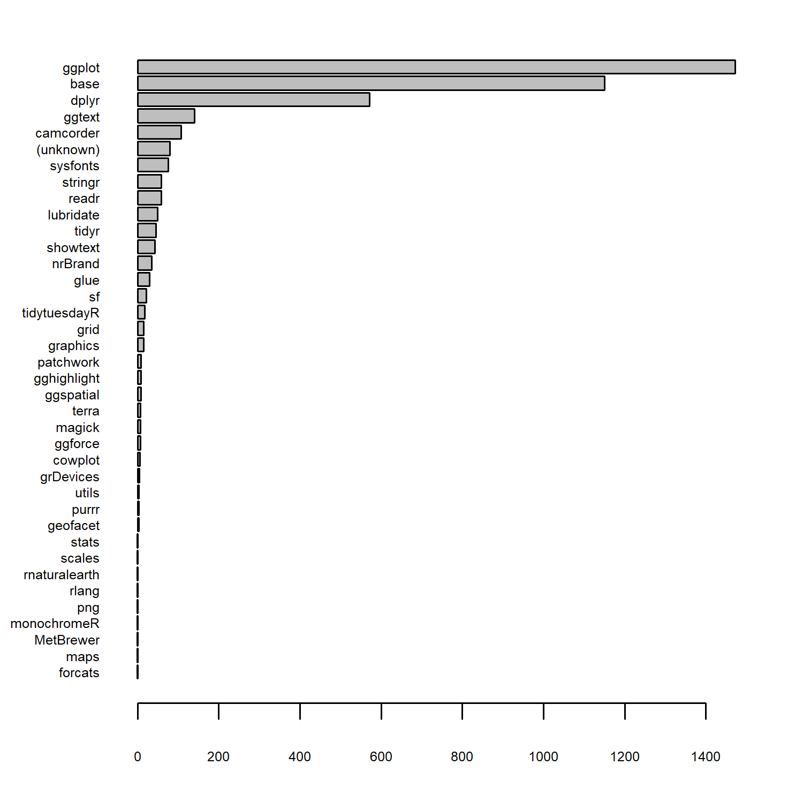
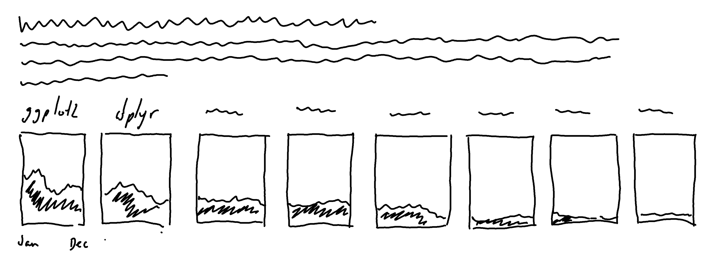
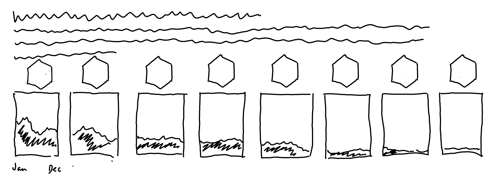
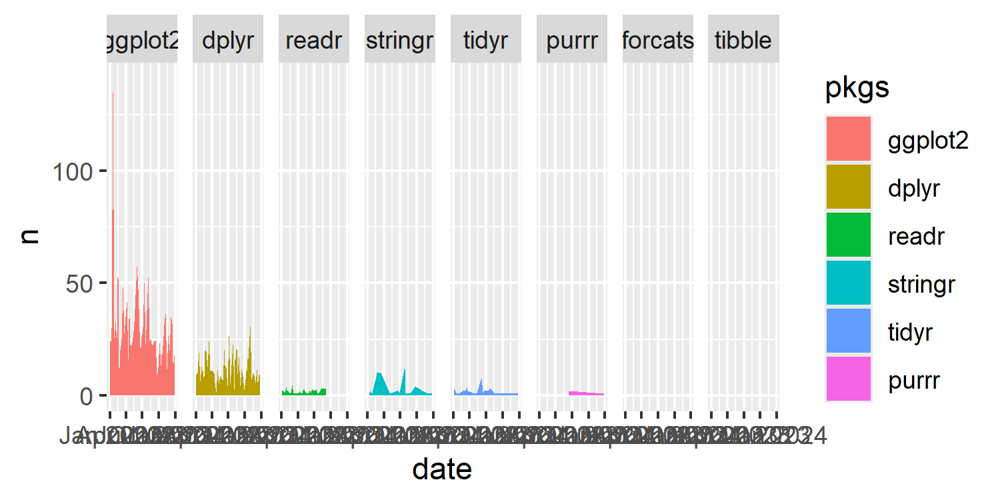
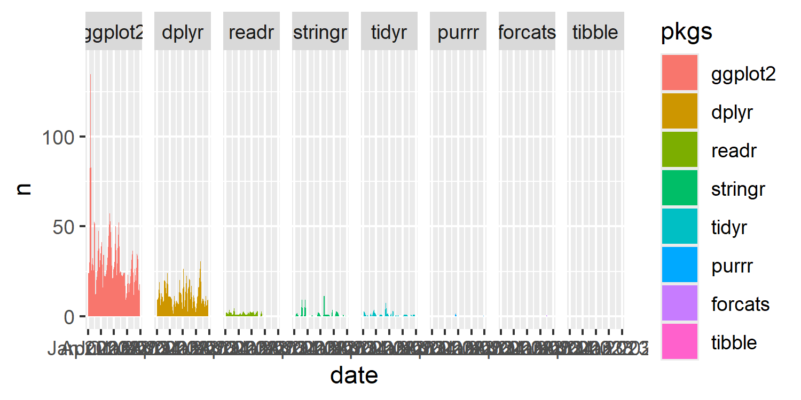
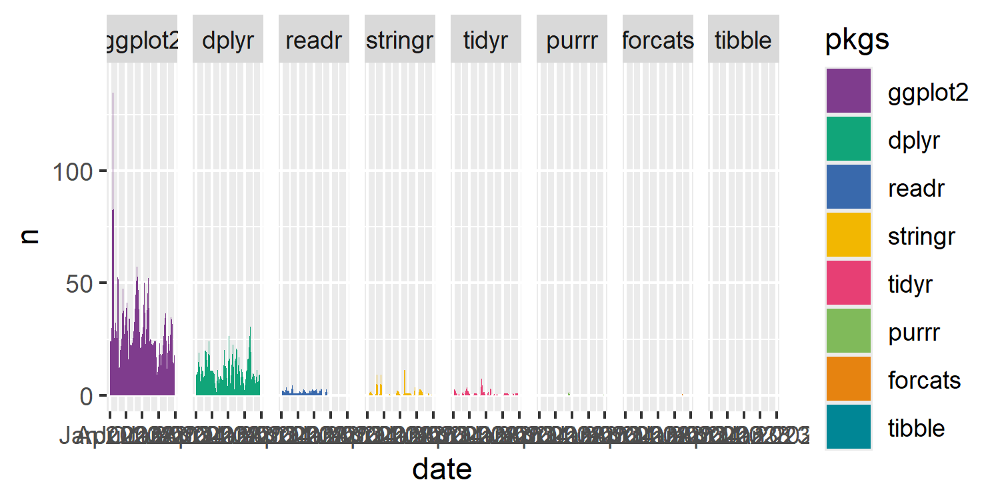
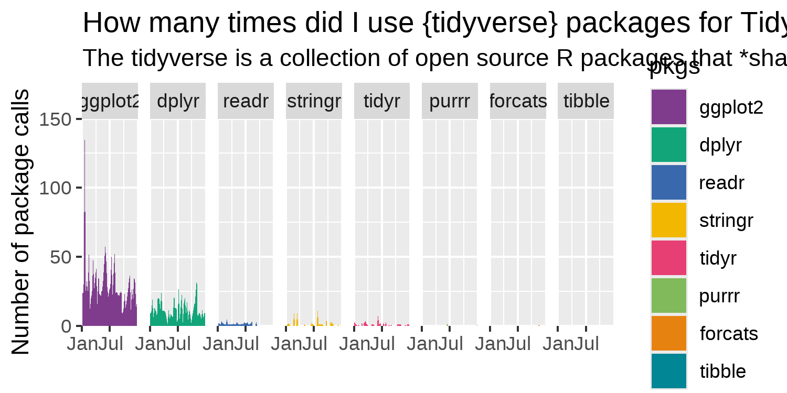
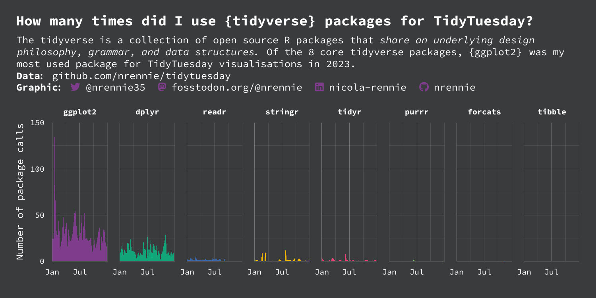
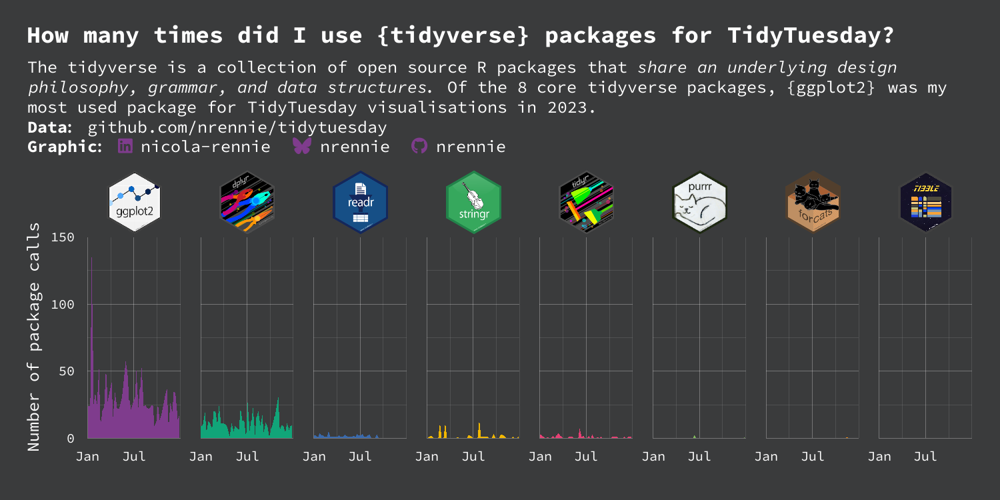
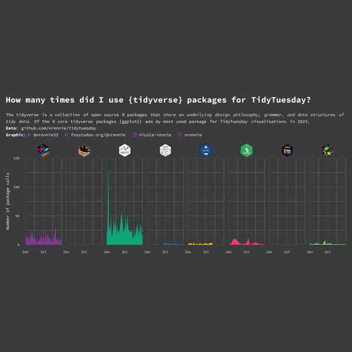

files_to_check <- funspotr::list_files_github_repo(
repo = "nrennie/tidytuesday",
branch = "main"
) |>
dplyr::filter(stringr::str_detect(relative_paths, "2023"))10 R Packages: using images for custom facet labels
In this chapter, we’ll learn about how to collect data on which packages and functions are used in R code, replacing the underlying data in a plot that’s already been made, and how to use images as category labels.
10.1 Data
In July 2024, TidyTuesday (R4DS Online Learning Community 2023) featured some examples of using the {funspotr} package (Shalloway 2023) as datasets. The {funspotr} package was designed to help identify which R functions and packages are used in files and projects. Let’s try to identify which R functions and packages have been used in this GitHub repository of TidyTuesday visualisations: github.com/nrennie/tidytuesday.
Let’s start by getting a list of all the files that exist in the GitHub repository. We can use the list_files_github_repo() function from {funspotr} to get this list of files - specifying which GitHub repository we want the list for (in the form of "username/repository"), and which branch of the repository we want to look at. The list_files_github_repo() function returns a data frame with two columns: relative_paths (file path relative to the root of the git repository) and absolute_paths (URL of each file).
All of the files in this repository are named and organised based on dates in the following structure: yyyy/yyyy-mm-dd/yyyymmdd.R (Rennie 2023c). Since the code to extract used functions takes a while to run, let’s filter this list of files to only include files dated 2023. We can use str_detect() from {stringr} to find any values in the relative_paths column that contain "2023" and then filter() from {dplyr} to keep only those rows.
We then pass the files_to_check data frame into spot_funs_files() from {funspotr} to get the list of functions and packages uses in each file. Since we want to look at total package use, we set show_each_use = TRUE to make sure that individual rows are returned each time a function is used (rather than just once for an entire file).
r_funs <- files_to_check |>
funspotr::spot_funs_files(
show_each_use = TRUE
)We then use the unnest_results() function from {funspotr} to get a row in the data for each use of a function. Since the code above takes a while to run, it’s also important that we save the data in a format that means we can use it later (rather than having to re-download it). We’ll save it as a CSV file using write.csv(), choosing an appropriate file name and removing the row names.
r_pkgs <- rfuns |>
funspotr::unnest_results()
write.csv(r_pkgs, "data/r_pkgs.csv", row.names = FALSE)We can then read the CSV back in using read_csv() from {readr} (or read.csv() if you prefer!)
r_pkgs <- readr::read_csv("data/r_pkgs.csv")The r_pkgs data has 4059 rows and 4 columns. The funs column contains names of each function used, and pkgs has the name of the package that function comes from. The remaining two columns are the relative_paths and absolute_paths columns that identify which file the function was found in. Let’s have a quick look at the data using head():
head(r_pkgs)# A tibble: 6 × 4
funs pkgs relative_paths absolute_paths
<chr> <chr> <chr> <chr>
1 library base 2023/2023-01-03/2… https://raw.g…
2 library base 2023/2023-01-03/2… https://raw.g…
3 library base 2023/2023-01-03/2… https://raw.g…
4 library base 2023/2023-01-03/2… https://raw.g…
5 font_add_google sysfonts 2023/2023-01-03/2… https://raw.g…
6 font_add_google sysfonts 2023/2023-01-03/2… https://raw.g…10.2 Exploratory work
The obvious question to start with here is: which packages are used most often?
10.2.1 Data exploration
Let’s start by counting the number of package uses with the table() function, and using sort() to arrange packages from least to most used.
We can then pass this into the barplot() function to obtain an ordered bar chart of package use - setting horiz = TRUE to make a horizontal bar chart. Since there is a large number of bars, we also adjust the labels to be a little smaller. We can see that ggplot comes out on top, closely followed by base!
Tip 10.1: Base R or {tidyverse}?
As an aside, this highlights that combining base R and {tidyverse} packages can be incredibly effective since they each have different strengths. There’s no need to choose a side on the base R versus {tidyverse} argument - use both!
barplot(
sort(table(r_pkgs$pkgs)),
# make labels smaller so they fit on the page
cex.axis = 0.5,
cex.names = 0.5,
las = 1,
horiz = TRUE
)

One thing that you may have noticed is that, for some reason, in the data the package is listed as "ggplot" rather than "ggplot2". So let’s fix that using mutate() and the if_else() function from {dplyr}. We can overwrite the existing pkgs column, where (i) if the value is currently "ggplot", we replace it with "ggplot2"; (ii) otherwise, we leave the existing value in the pkgs column.
r_pkgs <- r_pkgs |>
dplyr::mutate(
pkgs = dplyr::if_else(
pkgs == "ggplot",
"ggplot2",
pkgs
)
)10.2.2 Exploratory sketches
There are currently 38 packages listed in the data, many of them with one or two uses. That’s quite a lot of categories to visualize at once, so let’s narrow it down to only the core {tidyverse} packages (Wickham et al. 2019). We could visualise a simple bar chart (or variation of a bar chart) showing how often each core {tidyverse} package was used. But due to the structure of the file names, we also have information about when each package was used. So we could visualize usage over time, for each package.
For each package, we could create an area (or line) chart showing usage over time using facets as we did in Chapter 3. This time, the categories don’t really have a natural order, so instead we’ll order the facets from most to least used. It might look something like this:

One of the most incredible things about the R community, is our adoration of hex stickers - package logos in the shape of a hexagon. All of the core {tidyverse} packages have their own hex sticker. Rather than simply using the package name as the facet label in our plot, we could replace the labels with images of hex stickers:

10.3 Preparing a plot
To prepare an initial draft of the plot in Figure 10.2, we need to wrangle the following information from the data:
- The date each package use relates to (currently embedded in a file name);
- The number of package uses per day for each core {tidyverse} package; and
- Which package was used the most often?
10.3.1 Data wrangling
Since we’re going to focus on the core {tidyverse} packages, let’s start by making a vector of the package names:
core_tidyverse <- c(
"dplyr", "forcats", "ggplot2", "purrr",
"readr", "stringr", "tibble", "tidyr"
)We can then use this vector to filter() the data and keep only rows where the pkgs column has a value in the core_tidyverse vector.
The relative_paths are currently of the form "yyyy/yyyy-mm-dd/yyyymmdd.R", and we want to extract the date from this file path. There are multiple ways of doing this - the easiest way is to extract the part of the file path that is between the two /. You could use functions from the {stringr} package (Wickham 2023), which is designed for processing character strings. But we can alternatively make use of separate_wider_delim() from {tidyr}. This function allows you to separate a character string in one column, into multiple columns based on some delimiter. In this case, the delimiter will be /. By default, this will create three new columns for each section of the string: yyyy, yyyy-mm-dd, and yyyymmdd.R. We only want to keep the middle one, so we can use the trick of setting the names of columns we don’t want to keep to NA. Instead, we’ll create only one new column called date.
We also convert the date which is currently still a character string into a date object using mutate() and the ymd() function from {lubridate} (since the dates are specified in year, month, day format). Finally, we count how many observations there are of each package, per date.
r_pkgs_date <- r_pkgs |>
dplyr::filter(pkgs %in% core_tidyverse) |>
tidyr::separate_wider_delim(
relative_paths,
delim = "/",
names = c(NA, "date", NA)
) |>
dplyr::mutate(date = lubridate::ymd(date)) |>
dplyr::count(date, pkgs)We want the facets in our plot to be ordered from most to least used package. so let’s calculate the total number of uses for each package. Here, we can use the summarise() function in {dplyr}, to add up the values in the n column, split by pkgs. Here, we’re using the .by argument in summarise() but you could alternatively use group_by(pkgs) instead. We then arrange the rows of the data based on the updated summary n column. By default arrange() sorts in ascending order, so to sort in descending order we simply sort by -n instead. You could alternatively use dplyr::desc(n). Finally, we extract the pkgs column as a vector using pull() from {dplyr}.
pkgs_ordered <- r_pkgs_date |>
dplyr::summarise(n = sum(n), .by = pkgs) |>
dplyr::arrange(-n) |>
dplyr::pull(pkgs)
pkgs_ordered[1] "ggplot2" "dplyr" "readr" "stringr" "tidyr"
[6] "purrr" "forcats"What might strike you about this vector of ordered packages is that there are only 7 packages listed. If you look closely, you’ll notice that "tibble" is missing. It’s missing because it’s never been used directly - that’s not that surprising, since it’s often used in the background of the other {tidyverse} packages. The question now is, should it still be included in the chart? Sometimes, it’s important to visualise zeroes. So how do we add it tibble into the data?
The first thing we want to do is include it in the ordered list of packages that we’ll later use to define a factor level. Since it’s only one package, we could just manually add it to the end of the vector with c(pkgs_ordered, "tibble"). However, this isn’t a very robust solution. If we had data for a different year and wanted to repeat this analysis, this code wouldn’t work if "tibble" wasn’t missing, or if another package was missing.
Let’s find a generalisable way to figure out which core {tidyverse} packages are not included in the pkgs_ordered vector. We can use the setdiff() function from base R here. Running setdiff(x, y) tells you which elements of x are not in y (so it’s important to get the choices of x and y the right way around).
The difference in the two vectors (in this case "tibble") can then be appended to the end of the pkgs_ordered vector, to create a complete list of packages in order from most to least used, including zero usage:
pkgs_levels <- c(
pkgs_ordered,
setdiff(core_tidyverse, pkgs_ordered)
)Then, we use mutate() to convert the pkgs column of our data from a character string to a factor (ordered category) and set he levels equal to our new pkgs_levels vector:
plot_data <- r_pkgs_date |>
dplyr::mutate(
pkgs = factor(pkgs, levels = pkgs_levels)
)Now we’re ready to create a first draft of Figure 10.2!
10.3.2 The first plot
We start our plot by passing plot_data into ggplot() to use this data as the base for all elements in the plot. We then add geom_area() to create the geometry for the area chart, specifying the aesthetic mapping using aes() again. We put the date on the x-axis, n on the y-axis. and set the fill color of the area chart based on the category in pkgs. This is very similar to the initial plots created in Chapter 3.
We then add facet_wrap() to create small multiple plots, split by pkgs. We want our facet plots all in one line rather than arranged as a grid, so we set nrow = 1 inside facet_wrap(). Although "tibble" is a level in our pkgs factor column, no observations of that factor level exist. To make sure it still appears as an (empty) facet, we set drop = FALSE. Otherwise, only 7 faceted plots would be shown.
library(ggplot2)Warning: package 'ggplot2' was built under R version 4.4.1base_plot <- ggplot(plot_data) +
geom_area(
mapping = aes(
x = date,
y = n,
fill = pkgs
)
) +
facet_wrap(~pkgs, nrow = 1, drop = FALSE)
base_plotWarning in min(diff(unique_loc)): no non-missing arguments
to min; returning Inf

You might notice two things here:
- alongside the plot, a (slightly confusing) warning message is returned;
- the ordering of the plot doesn’t look quite right.
You might also notice the large spike in the {ggplot2} facet which shows 141 uses of the {ggplot2} package in a single script and wonder if this is an error. It’s not an error - it was actually used that many times!
Let’s start by thinking about the second one of these issues and see if we can figure out what’s happening. We’ve specified that the facets should be ordered from most to least used in total. But the area for the {stringr} package looks much larger than the area for the {readr} package - even though it should be smaller. It also looks as though there are no values in the {forcats} facet - but we know this isn’t true for {forcats}, only for {tibble}. Why is this happening?
The problem is that 0 is not included in the data. The areas are being drawn between only the strictly positive values, never going back down to 0. For packages that are used a lot but only in a few scripts, this makes their area larger than packages that are used once or twice in many scripts.
In our data set, if a package isn’t used in a script, there is no entry in the data. This makes sense since there are tens of thousands of packages and it would be much more difficult and time consuming to list every package that isn’t used, rather than just those that are. But in our case, these missing, unobserved values aren’t really missing values - they are 0 values.
The warning message returned from the plot is also trying to tell us about this problem (the warning just isn’t very clear!)
Tip 10.2: Don’t ignore the warning signs!
This is it a zero or is it missing? question has highlighted a few important aspects of plotting charts and data processing:
Don’t simply ignore warning messages if you don’t understand them. It might be tempting to ignore the warning message because you ended up with a plot that looks kind of like what you expected, and the warning message isn’t very clear about what’s wrong. But here, the warning was telling us that something was wrong with our assumptions about the data.
Ordering your data (sensibly) can help you to spot issues. If the facets hadn’t been ordered, it would have been harder to recognize that some area were overestimated, and some were underestimated.
Sometimes missing values are explicitly represented as
NAvalues (or something else), and other times missing values are simply rows that do not exist in the data. We often think about missing values more when we see them asNAvalues. But just because you have noNAvalues in your data, doesn’t mean that you don’t have any missing values.When you have missing values (whether explicit or implicit), it’s important to think about why they are missing and whether they are really missing. Does a missing values mean 0? Or does it mean it’s actually missing? Or does it mean something else entirely? It’s important to understand the process of data collection to answer this question correctly.
Let’s go ahead and add in zeros where they should be. We know that the date and pkgs columns are complete: there are no missing values in the date column and we’ve already addressed the issue with the missing "tibble" values. We need to make sure that every possible combination of date and pkgs exists in the data: any that do not already exist should be added and given a value of 0 in the n column.
We can use the complete() function from {tidyr} to complete the data. We pass in the date and pkgs columns to say which combinations of columns we need to make sure exist. By default, missing combinations are represented by NA, but we can override the fill argument to use 0 instead.
new_plot_data <- plot_data |>
tidyr::complete(
date, pkgs,
fill = list(n = 0)
)Let’s take a quick look at our updated data using head() to make sure this has worked:
head(new_plot_data, n = 8)# A tibble: 8 × 3
date pkgs n
<date> <fct> <int>
1 2023-01-03 ggplot2 24
2 2023-01-03 dplyr 9
3 2023-01-03 readr 2
4 2023-01-03 stringr 0
5 2023-01-03 tidyr 3
6 2023-01-03 purrr 0
7 2023-01-03 forcats 0
8 2023-01-03 tibble 0We can see that there are now quite a few 0 values included in the n column. Notice that "tibble" is now explicitly included as well, with 0 in the n column for all observations. This is because, by default, complete() uses all levels of the factor even if they aren’t observed in the data.
Now we need to update the data that is used in our base_plot. We could simply edit (or copy and paste) the code from above and substitute plot_data for new_plot_data. But we can alternatively use the %+% operator.
The %+% operator allows you to replace the current default data frame on an existing plot. We start with our existing base_plot, and then use %+% to set new_plot_data as the data used in the plot.
base_plot <- base_plot %+% new_plot_data
base_plot

Notice that the warning message has now disappeared.
10.4 Advanced styling
Now that we have a first draft of the plot, it’s time to work on polishing it. We’ll make some adjustments to the colors, fonts, text, scales, and themes - before we move on to editing the facets labels to create a visualisation like Figure 10.3.
10.4.1 Colors
Let’s go for a dark theme for our plot this time. We’ll choose a dark gray for the background color, and white for the text to ensure sufficient contrast.
bg_col <- "#3A3B3C"
text_col <- "white"Let’s also define a color palette that we’ll use for the fill color of the area charts. As we did in Chapter 6, we’ll use one of th palettes in {rcartocolor} (Nowosad 2018). As we did in Chapter 6, to avoid the gray color, we ask for one more color than we need and then throw away the gray color. We have 8 categories in our plot, so we ask for 9 colors using the carto_pal() function and then extract only the first 8. We’ll use the "Bold" palette here.
To keep a more consistent color theme in the plot, we define our highlight color variable, highlight_col, to be the first color in our chosen color palette.
col_palette <- rcartocolor::carto_pal(
length(core_tidyverse) + 1, "Bold"
)[1:length(core_tidyverse)]
highlight_col <- col_palette[1]We can then pass this col_palette vector into scale_fill_manual() function to apply the colors to our plot:
col_plot <- base_plot +
scale_fill_manual(
values = col_palette
)
col_plot

10.4.2 Fonts
Similar to Chapter 2, since code is the subject of the visualisation, we might want to choose a font that’s consistent with that theme. Here we’ll use Source Code Pro, a monospace font family originally designed specifically for coding environments. It’s loaded into R using font_add_google() from {sysfonts}.
In this chapter, we’ll use the same font for the title and body text so we only need to define one variable, body_font.
sysfonts::font_add_google(
name = "Source Code Pro",
family = "source"
)
showtext::showtext_auto()
showtext::showtext_opts(dpi = 300)
body_font <- "source"10.4.3 Adding text
As we’ve done in previous chapters, we’ll use the social_caption() function we defined in Chapter 7 to create a caption containing Font Awesome icons with social media handles:
social <- social_caption(
bg_color = bg_col,
icon_color = highlight_col,
font_color = text_col,
font_family = body_font
)The subtitle includes a quote from the {tidyverse} website, so we’ll format it in italics using *. We also use the source_caption() function we defined in Chapter 6 to create a caption with information about the data source, combined with the social icons to attribute the graphic.
title <- "How many times did I use {tidyverse} packages for TidyTuesday?"
st <- "The tidyverse is a collection of open source R packages that *share an underlying design philosophy, grammar, and data structures*. Of the 8 core tidyverse packages, {ggplot2} was my most used package for TidyTuesday visualisations in 2023."
source_cap <- source_caption(
source = "github.com/nrennie/tidytuesday",
graphic = social,
sep = "<br>"
)We also join together the subtitle text with the data and graphic source information using paste0() (although you could use glue() instead).
cap <- paste0(st, "<br>", source_cap)We can then pass this text into the labs() function to apply it to our plot. We also set x = "" to remove the x-axis text, and define a more informative y-axis title.
text_plot <- col_plot +
labs(
title = title,
subtitle = cap,
x = "",
y = "Number of package calls"
)
Tip 10.3: Removing axis titles
There are multiple different ways to remove the axis labels. You can set x = "" as we’ve done here, or x = NULL. You can also set axis.text.x = element_blank() inside theme() to remove the text.
10.4.4 Adjusting scales and themes
We can adjust the x- and y- axes labeling to deal with the over-crowding of the labels. By default, labels have been added on each facet, at every three months. Although the data only covers 2023, {ggplot2} also extends the x-axis to cover the beginning of 2024. We can adjust the limits and breaks of the x-axis scale to show only 2023, and have fewer labels. Since the values on the x-axis are dates, we use scale_x_date() to make the adjustments. This also means that the values we pass into the breaks and limits arguments of scale_x_date() should be dates, and so we again make use of ymd() from {lubridate}. We set the x-axis limits to be from January 1 to December 31 of 2023, and add labels on the first of January and July.
For the y-axis, we choose nice limits and breaks - setting the limits to between 0 and 150, with breaks every 50. To remove the excess space around the edge of each facet plot, we also set expand = FALSE in coord_cartesian().
limits_plot <- text_plot +
scale_x_date(
limits = lubridate::ymd(c("20230101", "20231231")),
breaks = lubridate::ymd(c("20230101", "20230701")),
labels = c("Jan", "Jul")
) +
scale_y_continuous(
limits = c(0, 150),
breaks = c(0, 50, 100, 150)
) +
coord_cartesian(expand = FALSE)
limits_plot

Let’s edit the arguments of theme() to finalist out plot. There’s a fairly large number of adjustments to make, so we’ll do them in two stages.
We’ll start by setting the default font family and base font size in the text argument through element_text(). We also remove the legend and add a little bit of space around the edges of the plot using the margin() function.
We then edit the plot.background and panel.background to have the background color we defined earlier (as bg_col) by using the fill and color arguments in element_rect(). We also do the same for the facet label background which is controlled by the strip.background argument. Although we’re planning to replace the facet labels with images, for now we’ll format them with bold text in our preferred color. The spacing between the facets is controlled by the panel.spacing argument.
init_theme_plot <- limits_plot +
theme(
text = element_text(family = body_font, size = 6),
legend.position = "none",
plot.margin = margin(5, 10, 5, 10),
# plot background
plot.background = element_rect(
fill = bg_col, color = bg_col
),
panel.background = element_rect(
fill = bg_col, color = bg_col
),
# facet strip text and background
strip.background = element_rect(
fill = bg_col, color = bg_col
),
strip.text = element_text(
face = "bold",
color = text_col
),
panel.spacing = unit(0.5, "lines")
)Our final adjustments include specifying that we’re using {ggtext} for the title and subtitle to allow the HTML and Markdown text to be processed correctly. We do this by using element_textbox_simple() from {ggtext} in the plot.title and plot.subtitle arguments, where we also set the font color, left-align it, and add a little padding around the edges. The title text is made slightly larger than normal by using the rel() function in size. Setting plot.title.position = "plot" means that the title and subtitle text is aligned with the edge of the whole plot, rather than the edge of the first facet plot. This gives a cleaner looker and avoids extra white created due to the width of the y-axis text.
We also make sure that the x- and y-axes labels and title are the correct color using element_text(). Finally, the grid lines are made thinner and semi-transparent using the color and linewidth arguments in element_line(). The minor grid lines are made a little bit more transparent than the major grid lines.
theme_plot <- init_theme_plot +
theme(
# title and subtitle text
plot.title.position = "plot",
plot.title = ggtext::element_textbox_simple(
color = text_col,
hjust = 0,
halign = 0,
margin = margin(b = 5, t = 5),
face = "bold",
size = rel(1.4)
),
plot.subtitle = ggtext::element_textbox_simple(
color = text_col,
hjust = 0,
halign = 0,
margin = margin(b = 5, t = 0)
),
# axes styling and grid lines
axis.text = element_text(
color = text_col
),
axis.title = element_text(
color = text_col
),
axis.ticks = element_blank(),
panel.grid.major = element_line(
color = alpha(text_col, 0.3),
linewidth = 0.2
),
panel.grid.minor = element_line(
color = alpha(text_col, 0.1),
linewidth = 0.2
)
)
theme_plot

This visualisation is perfectly fine as it is, but we can still edit the facet labels to use hex stickers instead of text labels, as we proposed in Figure 10.3.
10.4.5 Using images as facet labels
As we saw in Chapter 9, packages such as {ggimage} (Yu 2023) can be used to plot images within the plotting area. Here, we want to use images outside of the plotting area in the facet labels. There are several options for overlaying images on existing plots (including outside of the main plot area). The inset_element() function from {patchwork} (Pedersen 2024) can add elements on top of existing plots (we’ll see an example in Chapter 13). Similarly, draw_image() function from {cowplot} (C. O. Wilke 2024) simplifies the process of combining plots and images. However, to edit the facet labels we don’t actually need any additional packages beyond the ones we’ve already used to make the plot.
We’ve used the {ggtext} package (C. O. Wilke and Wiernik 2022) many times already to add styling through the use of both Markdown and HTML syntax. For example, we added lines breaks using <br> and colored text using <span></span>. The <img> tag is used to add images in HTML. So let’s use that in combination with {ggtext} to format the facet labels!
Before we get started, we need to get some images! The hex stickers for many R packages can be found at github.com/rstudio/hex-stickers. For each of the 8 packages included in the plot, we can download the relevant hex sticker and save it somewhere sensible. Here, we’ll save each image as a PNG file and the name of the file is the same as the name of the package e.g. the hex sticker for {dplyr} is saved as dplyr.png (RStudio 2020a). To keep our directories looking clean and tidy, we might choose to save them in a folder. Here, we’ll save them in a nested folder: images/hex/. This means the (relative) file path for our {dplyr} hex sticker is images/hex/dplyr.png. This is what we want to pass in as the image source in the <img> HTML tag for the {dplyr} facet label.
This means we need to make two edits to our data:
- including
<img>tags in thepkgscolumn that is used as the faceting variable. - including
<img>tags in the factor levels of thepkgscolumn to keep the correct ordering.
Let’s start with the factor levels. Currently, the factor levels are just the package names. Luckily, we’ve been smart enough to save the images with the package name as the file name. This means we can use glue() from the {glue} package to stick together the package names with the HTML code. Let’s pass in the pkgs_levels vector we created earlier in to the end of the image file path, to create a new vector for the factor levels:
new_levels <- glue::glue(
"<img src='images/hex/{pkgs_levels}.png'>"
)We can also control how the images appear within the <img> tag (to some extent). For example, we can set the width of the image (this will take a little bit of trial and error!). Unfortunately, the hjust and halign arguments don’t seem to fully center the image within the facet label area. Instead, we can use a slightly hacky solution and add some blank space to the left hand side. In HTML, can be used to add a (non-breaking) space. Again, a little bit of trial and error is needed to figure out how many spaces we need to add.
new_levels <- glue::glue(
" <img src='images/hex/{pkgs_levels}.png' width='20'>"
)Now we need to do the same thing to the pkgs column. It’s important that we overwrite the pkgs column here rather than making an entirely new column. This means that we can use the %+% operator to update the data and {ggplot2} will still be able to find the correct variable to facet by. We again use glue() to add the pkgs column into HTML <img> tags - being very careful to make sure that the new column values match exactly to the factor levels we defined in new_levels. This allows us to then apply these factor levels using mutate() to make sure the ordering of the packages from most to least used in retained.
plot_img_data <- new_plot_data |>
dplyr::mutate(
pkgs = glue::glue(" <img src='images/hex/{pkgs}.png' width='20'>")
) |>
dplyr::mutate(
pkgs = factor(pkgs, levels = new_levels)
)As we did earlier, let’s update the data to use our new plot_img_data using the %+% operator:
img_plot <- theme_plot %+% plot_img_dataWe also need to tell {ggplot2} that the facet labels are using HTML tags, just as we’ve done with the caption. We edit the theme() function further and update the styling for strip.text.x. We again use element_textbox_simple() from {ggtext}, and set hjust and halign both to 0.5.
img_plot +
theme(
strip.text.x = ggtext::element_textbox_simple(
hjust = 0.5,
halign = 0.5
)
)

Tip 10.4: Facet label images using {marquee}
You can do a very similar thing using the {marquee} package (Pedersen and Mitáš 2024) instead of {ggtext}. The images can be added to pkgs using standard Markdown syntax instead of HTML tags:
plot_img_data <- new_plot_data |>
dplyr::mutate(
pkgs = glue::glue("")
)Remember that you’d also need to update the factor levels and the data used in the plot. You’d then adjust the theme to use element_marquee() to process the Markdown syntax:
img_plot +
theme(
strip.text.x = marquee::element_marquee(
hjust = 0.5,
width = 1
)
)However, controlling the sizing and placement of the images is (at the time of writing) a little bit more difficult with {marquee}.
10.5 Reflection
Overall, this plot is very effective - it clearly shows the differing levels of R package use whilst still being eye-catching. However, there are still a few improvements that can be made.
Other then for {ggplot2} and {dplyr}, it’s quite hard to read the values as they are very small compared to the height of the y-axis. This is due to the high usage of {ggplot2} on a single occasions. Maybe using a log transformation of the y-axis would make it easier to see the very small values - although log transformations do have their own downsides in terms of interpretability.
The use of color could also be improved here. The colors are used to differentiate the different packages, and so don’t provide any further information not already given by the facet labels - similar to Chapter 3. A single color for all area plots would provide the same amount of information, but look a little bit less distracting. If we did still want to use different colors, we may consider matching them more closely to the colors in the hex sticker images. For example, the green in the {stringr} hex sticker image is quite similar to the green used in the {dplyr} area chart - this is currently a little bit distracting.
Each plot created during the process of developing the original version of this visualisation was captured using {camcorder}, and is shown in the gif below. If you’d like to learn more about how {camcorder} can be used in the data visualisation process, see Section 15.1.

{kind=link}
{kind=link}
{kind=link}
{kind=link}
{kind=link}
{kind=link}
{kind=link}
{kind=link}